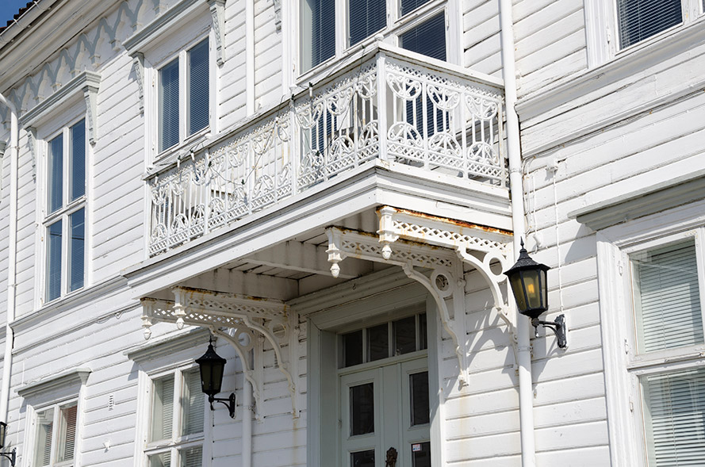

CONTACT US
For more information please contact us by email or phone
re-cycle_tours@hotmail.com
+47 37 15 12 34
Monday to Sunday
08:00 - 18:00
Address
Torvet 1
4950, Risør
Norway
How to get here
By Road: Risør is located approximately three hours drive from Oslo and 1,5 hours drive from Kristiansand along the E18.
By Bus: There are several daily departures between Oslo, Kristiansand and Stavanger with bus. The buses stops by E 18 at Vinterkjær bus stop. From there either corresponding local bus or taxi to Risør (10 minutes).
By Train: The nearest railway station to Risør is Gjerstad stasjon.